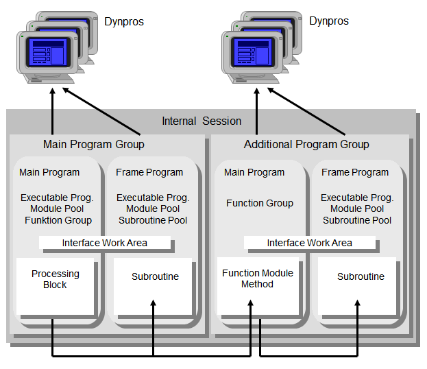

SAP NetWeaver AS ABAP Release 751, ©Copyright 2017 SAP AG. All rights reserved.
ABAP - Keyword Documentation → ABAP - Reference → Calling and leaving program units → Calling Processing Blocks → Calling Procedures → External Procedure Calls →Program Groups in External Procedure Calls
The programs within an internal session are grouped into program groups there. There is always a main program group and possibly multiple additional program groups. Each program group contains a main program and possibly several additional programs. In an external procedure call, it is important to know the program group of the master program of the procedure, if the procedure accesses shared resources of the program group. This causes non-critical and critical external procedure calls.
Non-Critical External Procedure Calls
The only procedures designed for external calls are the visible methods of global classes and function modules. The master programs of these procedures are always main programs of their program groups and the procedure always works with the resources of this program group.
Note
For this reason, only call the methods of global classes and function modules.
Critical External Procedure Calls
Subroutines and the methods of local classes are not designed for external calls. There is no static assignment to a program group in external subroutine calls or in dynamic calls of the local class of a program that does not form its own program group. The program in which an unloaded program is used for the first time determines the program group. The order of user actions, field contents, or switches can determine the order of the programs, which means that the master program of the procedure can be in the main program group in one instance, and in an additional program group in another instance.
The usage of external procedures of additional programs is critical for the following reasons:
Therefore, there is no static way of defining which interface work areas and which screens are used by an externally called subroutine or local class. The following figure shows how programs are added to program groups, using the example of an external subroutine call.

Subroutines and methods of local classes must always be called internally and never externally.
Note
The text elements of an added program are always taken from its own text pool.
Example
The table work area dbtab declared in sapssubr is shared either with sapmprog or with saplfugr. If share has the value 'FUGR', saplfugr andsapssubr share the table work area. Otherwise it is shared by sapmprog and sapssubr.